RECIPE COLLECTION
🇺🇸 USA — American Classics
American classics and comfort-food favorites, from casseroles and barbecue to Southern and Italian-American staples.
104 recipes
No matching recipes yet. Try another recipe name, ingredient, cuisine, or tag.

Dessert
Chocolate Cake
A classic American chocolate layer cake with moist cocoa layers and smooth chocolate buttercream frosting.

Breakfast
Classic Banana Banana Bread
Moist, tender banana bread packed with ripe banana flavor and a buttery brown-sugar crumb.

Dessert
Easy Sugar Cookies
Simple buttery sugar cookies with crisp edges and a soft, tender center.

Dinner
Classic Slow Cooker Pot Roast
Fall-apart tender beef pot roast with carrots, potatoes, onion, and a rich savory cooking broth.

Dinner
Classic Chicken Pot Pie
Creamy chicken and vegetables baked under a golden, flaky pie crust for classic American comfort food.

Dessert
Classic Chocolate Chip Cookies
Crisp-edged, chewy-centered chocolate chip cookies with plenty of melted chocolate in every bite.

Chicken
Southern Fried Chicken
Crispy, golden Southern-style fried chicken with juicy seasoned meat and a crunchy coating.

Appetizer
Buffalo Chicken Dip
Creamy, cheesy Buffalo chicken dip with tangy hot sauce, ranch, and tender shredded chicken.
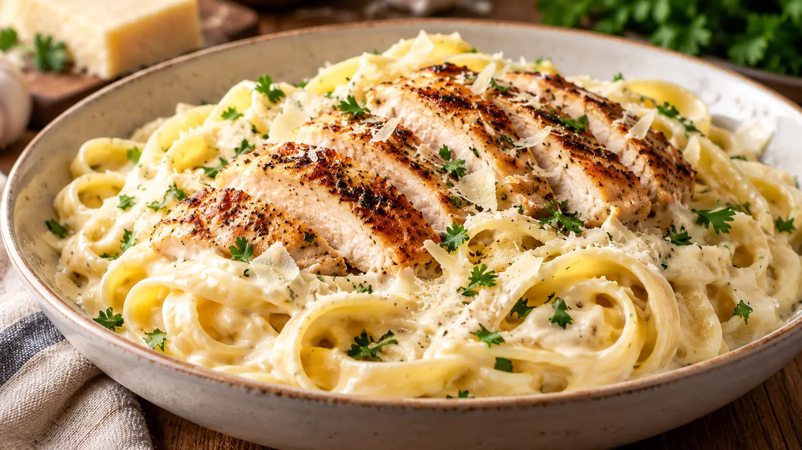
Pasta
Chicken Alfredo
Creamy chicken Alfredo with tender fettuccine, garlic, Parmesan, and golden pan-seared chicken.

Chicken
Chicken Parmesan
Crispy Parmesan-crusted chicken baked with marinara, mozzarella, and fresh herbs.
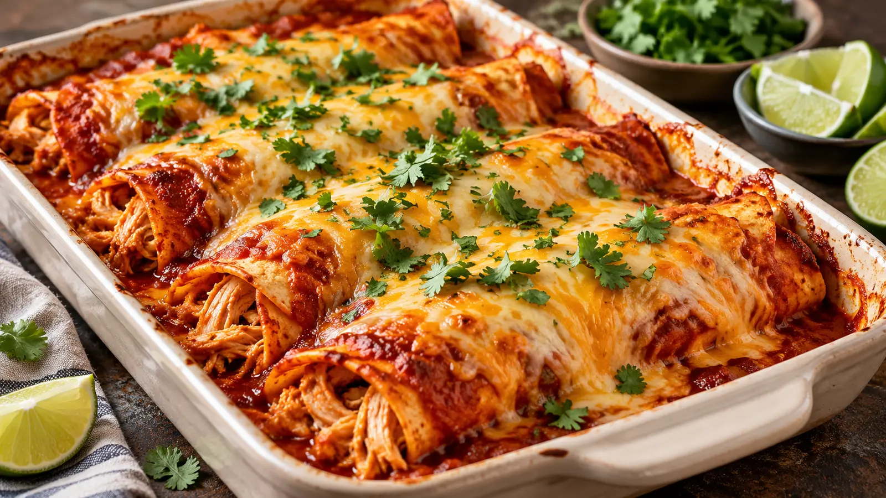
Dinner
Chicken Enchiladas
Tender shredded chicken rolled in tortillas, covered with red enchilada sauce, and baked with melted cheese.

Chicken
Chicken Fajitas
Sizzling chicken fajitas with colorful peppers, onions, warm tortillas, and fresh lime.

Dinner
Chicken Fried Rice
Fast chicken fried rice made with chilled rice, tender chicken, scrambled eggs, vegetables, and savory soy sauce.

Salad
Chicken Caesar Salad
Crisp romaine, juicy chicken, crunchy croutons, Parmesan, and creamy Caesar dressing in a satisfying classic salad.
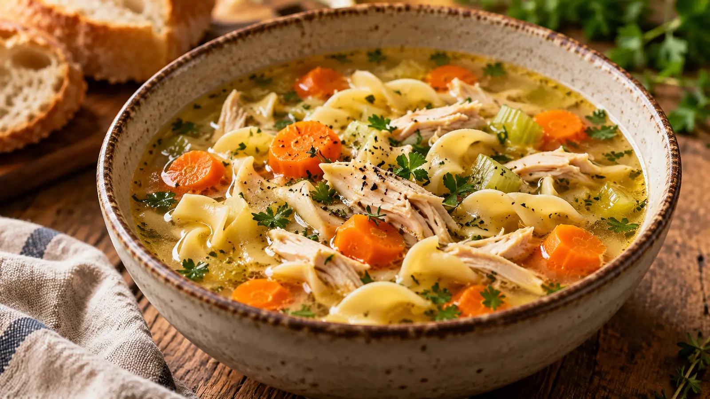
Soup
Chicken Noodle Soup
Comforting homemade chicken noodle soup with tender chicken, vegetables, herbs, and egg noodles in a rich broth.

Dinner
Chicken and Rice Casserole
A creamy American-style chicken and rice casserole with tender chicken, vegetables, cheddar, and a golden baked finish.

Dinner
Chicken Bacon Ranch Casserole
A creamy chicken bacon ranch pasta casserole with cheddar, tender chicken, smoky bacon, and a bubbly baked top.
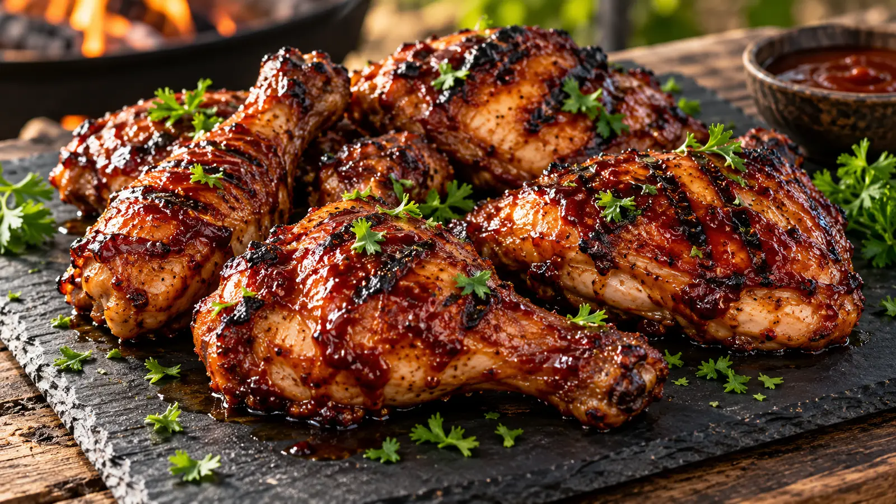
Chicken
BBQ Chicken
Juicy American barbecue chicken with smoky seasoning and a sticky, caramelized barbecue sauce glaze.
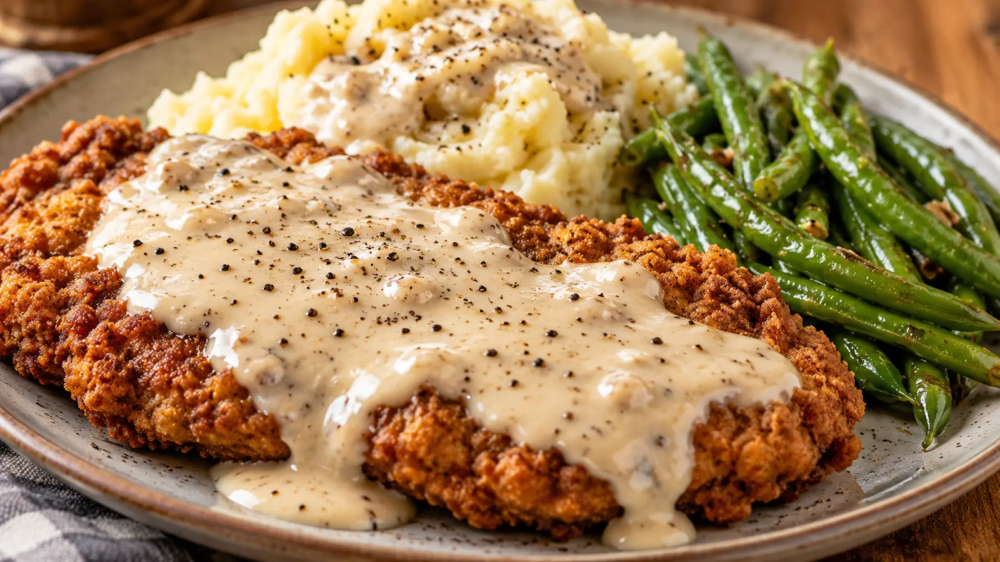
Beef
Chicken Fried Steak
Southern-style chicken fried steak made with tenderized beef, a crisp seasoned crust, and creamy peppered country gravy.

Dinner
Chicken and Dumplings
Classic Southern chicken and dumplings with tender chicken, vegetables, a creamy savory broth, and fluffy drop dumplings.
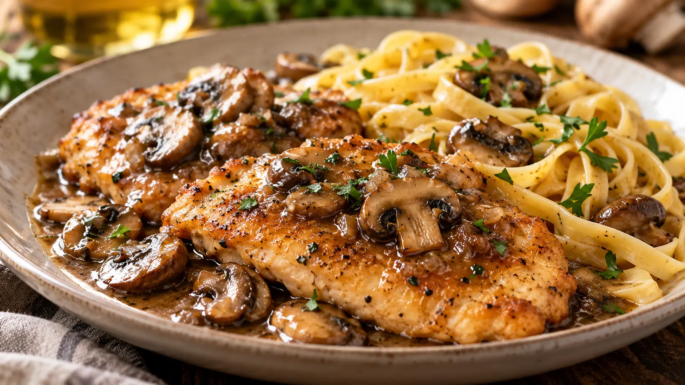
Chicken
Chicken Marsala
Italian-American chicken Marsala with golden chicken cutlets, mushrooms, and a savory Marsala wine pan sauce.

Chicken
Chicken Piccata
Bright Italian-American chicken piccata with thin golden cutlets, lemon, capers, butter, and a light pan sauce.

Dinner
Chicken Parmesan Casserole
A family-style chicken Parmesan casserole with pasta, marinara, tender chicken, mozzarella, Parmesan, and a crisp breadcrumb topping.
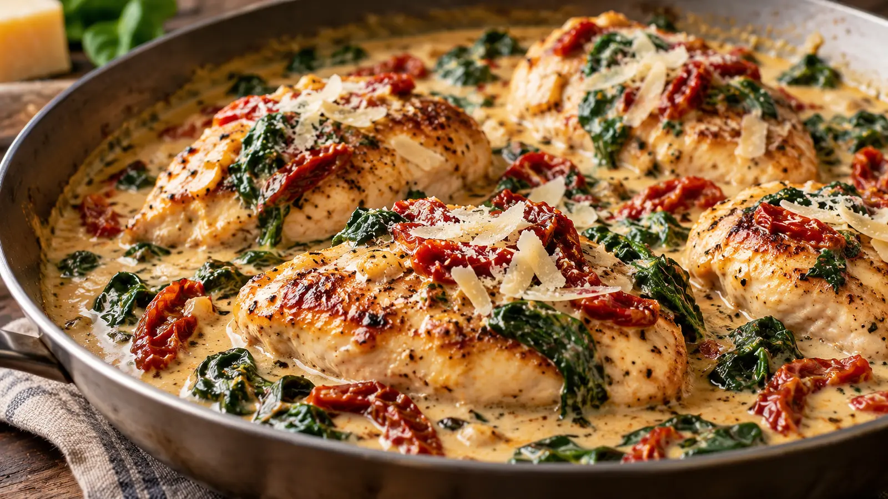
Chicken
Creamy Tuscan Chicken
Creamy Tuscan-style chicken with sun-dried tomatoes, spinach, garlic, Parmesan, and a rich skillet sauce.

Chicken
Marry Me Chicken
Modern American Marry Me Chicken with golden chicken, sun-dried tomatoes, Parmesan, herbs, and a creamy garlic pan sauce.

Beef
Classic Cheeseburger
A juicy American cheeseburger with a deeply browned beef patty, melted American cheese, crisp toppings, and a toasted sesame bun.
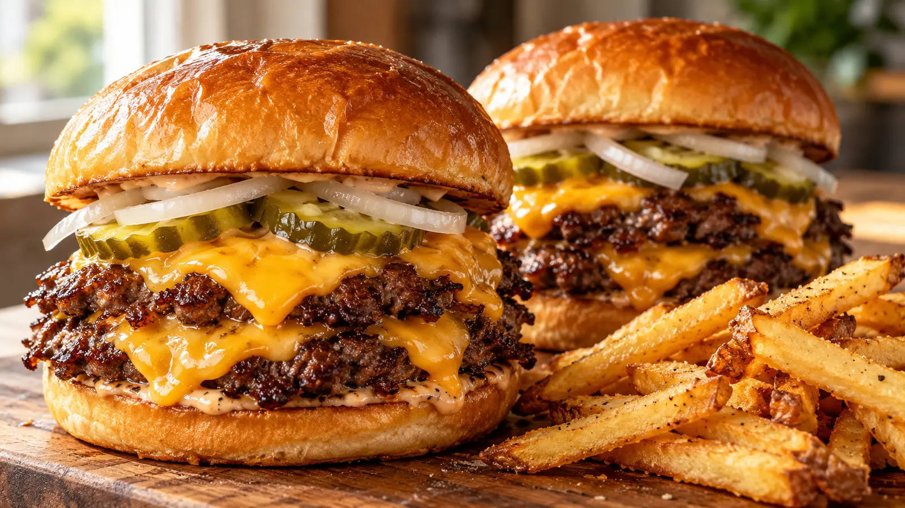
Beef
Smash Burgers
Thin, crisp-edged smash burgers with caramelized beef, melted cheese, tangy burger sauce, pickles, and toasted soft buns.

Beef
Beef Stroganoff
Tender strips of beef and mushrooms in a creamy, savory stroganoff sauce served over buttery egg noodles.

Beef
Classic Beef Chili
A hearty American beef chili simmered with tomatoes, beans, peppers, warm spices, and rich ground beef.

Beef
Chili Mac
A cozy one-pot chili mac with seasoned ground beef, tomatoes, beans, tender macaroni, and melted cheddar cheese.

Beef
Beef Enchiladas
Cheesy Tex-Mex beef enchiladas filled with seasoned ground beef, rolled in corn tortillas, and baked in red enchilada sauce.

Beef
Beef Burritos
Big, satisfying beef burritos packed with seasoned ground beef, rice, beans, cheese, salsa, and fresh toppings.

Beef
Beef Fajitas
Sizzling beef fajitas with marinated steak, charred peppers and onions, warm tortillas, lime, and classic Tex-Mex toppings.

Beef
Philly Cheesesteak
A classic-style Philly cheesesteak with thinly sliced ribeye, caramelized onions, melted provolone, and a toasted hoagie roll.
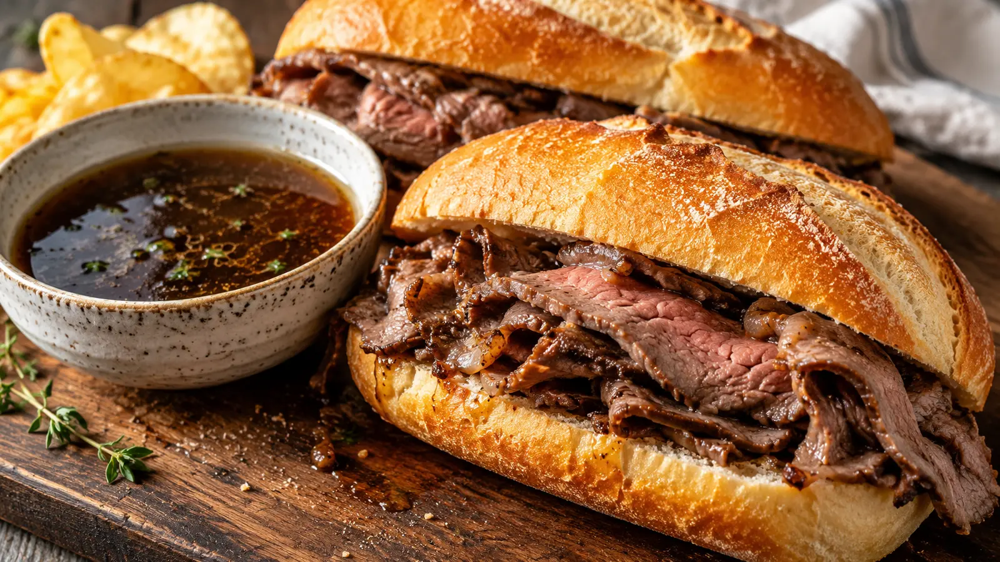
Beef
French Dip Sandwiches
Warm French dip sandwiches layered with tender roast beef and provolone on toasted rolls, served with rich beef au jus for dipping.

Beef
Sloppy Joes
Saucy, savory-sweet ground beef simmered with peppers, onion, tomato, mustard, and Worcestershire, piled onto toasted buns.

Beef
Salisbury Steak
Tender seasoned beef patties served in a rich mushroom-and-onion brown gravy for a classic American comfort-food dinner.

Beef
Salisbury Steak Meatballs
Juicy beef meatballs finished in a savory mushroom-and-onion Salisbury-style gravy, ideal with mashed potatoes or noodles.

Beef
Beef and Broccoli
Tender slices of beef and crisp broccoli tossed in a glossy savory stir-fry sauce for a Chinese-American takeout favorite.

Beef
Korean Beef Bowls
Fast Korean-inspired ground beef glazed with soy, gochujang, garlic, ginger, and sesame, served over hot rice.

Beef
Ground Beef Casserole
A hearty baked casserole of seasoned ground beef, egg noodles, tomato, sour cream, and melted cheddar cheese.
 <…233 tokens truncated…
<…233 tokens truncated…Beef
Beef Quesadillas
Golden flour tortillas filled with warmly spiced ground beef and plenty of melted cheese for an easy skillet meal.

Beef
Steak Bites
Tender bite-size pieces of sirloin seared until deeply browned and finished with butter, garlic, thyme, and parsley.

Beef
Garlic Butter Steak
Pan-seared steak with a deep brown crust, basted with foaming garlic-herb butter for a simple steakhouse-style dinner.

Pork
Pulled Pork
A slow-cooker pork shoulder recipe that finishes with distinct, juicy shreds in a tangy barbecue cooking sauce for sandwiches or plated meals.

Pork
BBQ Ribs
Spare ribs cooked over indirect heat with a paprika-forward rub, then tenderized in a covered finish and lightly glazed just before serving.

Pork
Baby Back Ribs
Oven-baked baby back ribs with a balanced smoky seasoning, a moist covered bake, and a short high-heat barbecue finish.

Pork
Pork Tenderloin
A quick skillet-to-oven pork tenderloin with an aromatic herb crust, browned exterior, and a temperature-guided juicy centre.

Pork
Pork Carnitas
Citrus-and-spice braised pork shoulder, pulled into varied pieces and finished under high heat for crisp edges and tender centres.

Pork
Pork Belly
Smoked pork belly cubes with a gradual covered tenderizing stage and a glossy barbecue glaze that clings to caramelized edges.

Pork
Pork Loin Roast
Herb-rubbed centre-cut pork loin roasted over onions, checked by temperature, and rested before slicing for a moist family-style roast.

Pork
Sausage and Peppers
Italian-American sausages browned first, then finished with sweet peppers, onion, tomato, and herbs in one substantial skillet meal.

Breakfast
Biscuits and Gravy
Warm biscuits served with a peppery pork-sausage gravy, thickened directly in the skillet for a comforting Southern-style breakfast.

Pork
Ham and Cheese Casserole
A ham-and-cheese pasta bake with a stovetop cheese sauce, a short oven finish, and a crunchy Parmesan crumb topping.
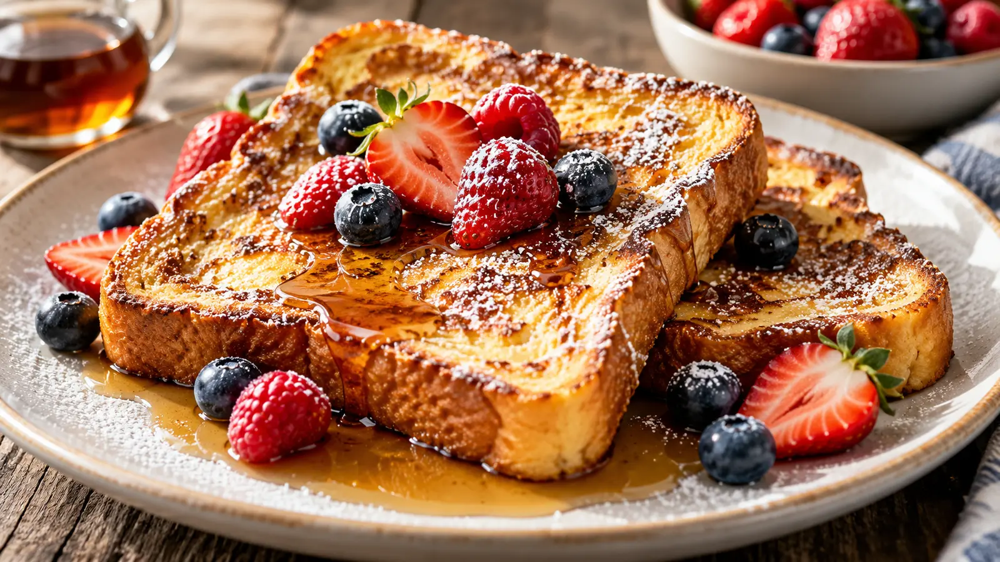
Breakfast
French Toast
Skillet French toast made with thick bread, a cinnamon-vanilla egg custard, and a gently browned buttery finish for breakfast or brunch.

Breakfast
Cinnamon French Toast
Cinnamon French toast with thick bread, a lightly sweetened vanilla custard, and a golden butter-cooked exterior.
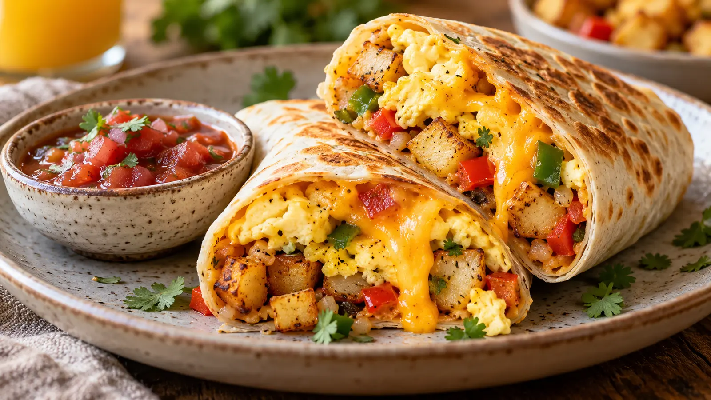
Breakfast
Breakfast Burritos
Pan-crisped breakfast burritos filled with softly scrambled eggs, ham, melting cheese, and tomato for a hearty portable breakfast.
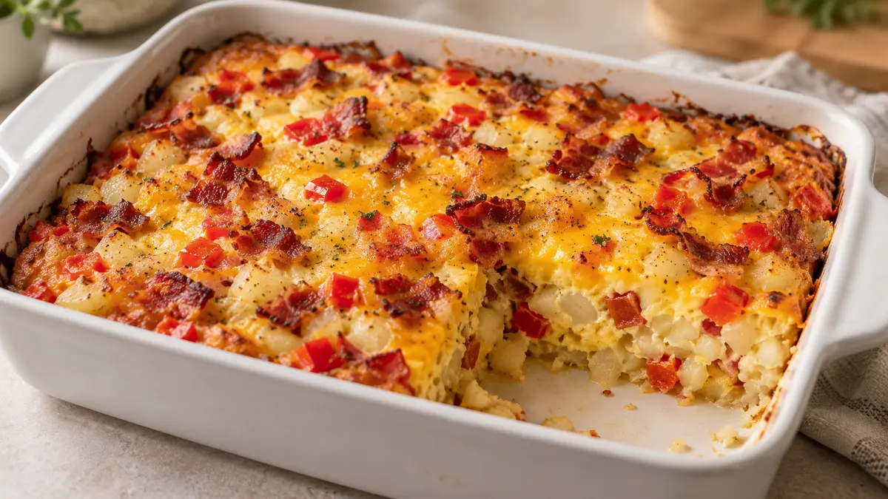
Breakfast
Breakfast Casserole
An oven-baked breakfast casserole of hash browns, bacon, softened vegetables, eggs, and cheddar, cut into warm shareable squares.
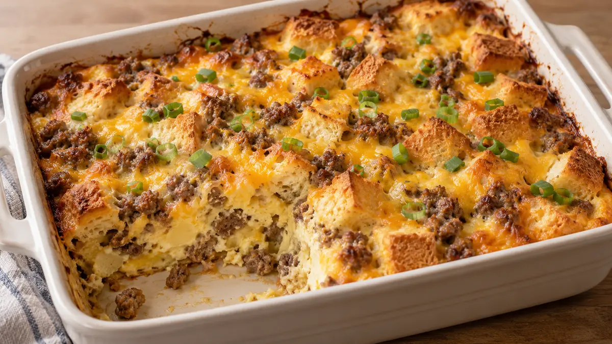
Breakfast
Sausage Breakfast Casserole
An overnight sausage breakfast bake with bread, egg custard, and cheddar, cooked until the centre is set and the top is golden.
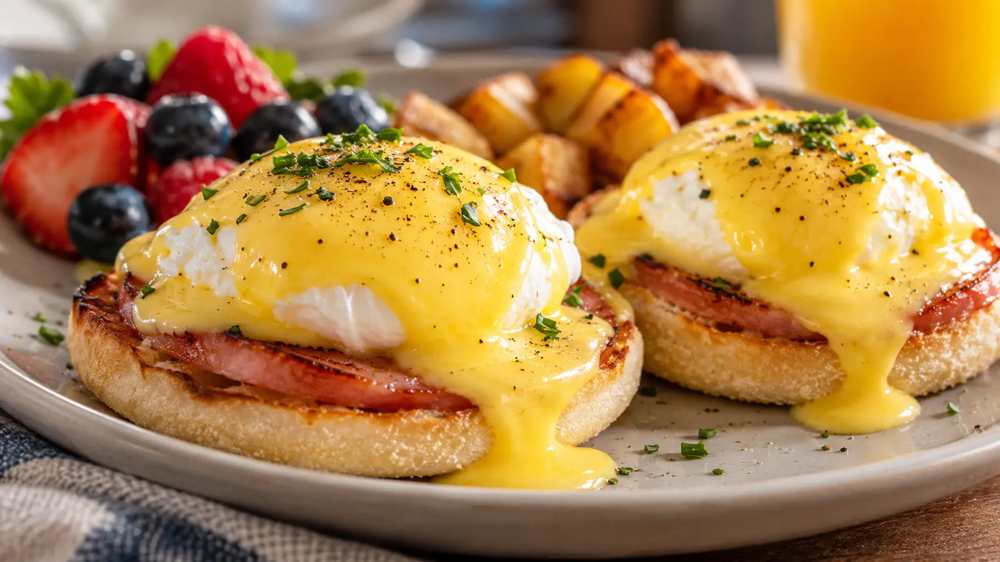
Breakfast
Eggs Benedict
Eggs Benedict assembled from toasted English muffins, warmed Canadian bacon, softly poached eggs, and a lemony butter hollandaise.

Breakfast
Hash Browns
Skillet hash browns made from well-dried russet potato shreds, cooked in a thin layer for a crackly crust and a soft potato middle.
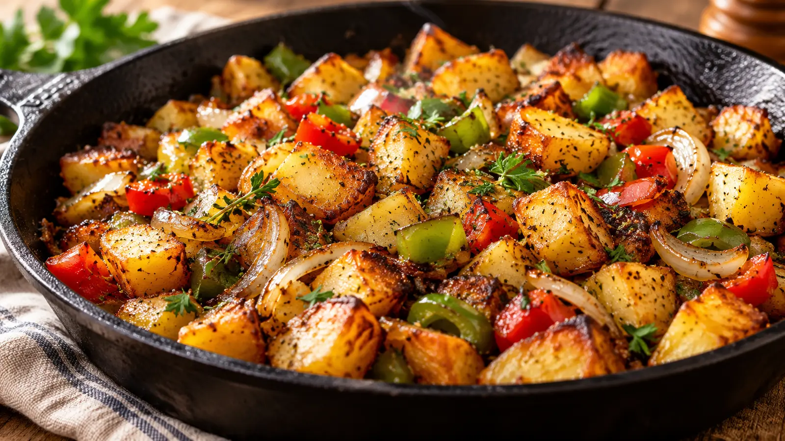
Breakfast
Home Fries
Golden breakfast potato cubes tossed with tender onion, red pepper, smoked paprika, and parsley, with browned sides and a soft centre.
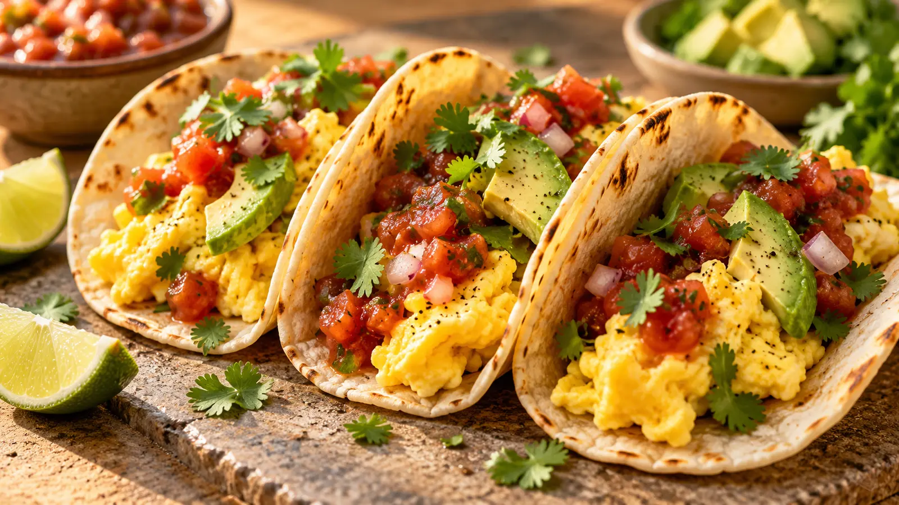
Breakfast
Breakfast Tacos
Warm tortillas filled with softly cooked eggs, savoury chorizo, melting cheese, avocado, and bright pico de gallo for a flexible Tex-Mex breakfast.

Soup
Tomato Soup
A smooth tomato and basil soup built from canned whole tomatoes, gently softened vegetables, and vegetable broth for a comforting lunch or light supper.

Soup
Creamy Tomato Soup
Velvety tomato soup enriched with a little cream and Parmesan, balanced by garlic and basil for a fuller, mellow finish.

Soup
Potato Soup
A chunky, creamy potato soup with crisp bacon, cheddar, sour cream, and chives, thickened by mashing part of the cooked potatoes in the pot.

Soup
Broccoli Cheddar Soup
A rich broccoli and cheddar soup with small tender florets, grated carrot, and a smooth cheese base that stays spoonable rather than overly thick.

Soup
Clam Chowder
New England-style clam chowder with tender clams, potatoes, bacon, and a creamy savory broth seasoned with thyme.

Soup
Chicken Tortilla Soup
A zesty chicken tortilla soup with tomatoes, black beans, corn, smoky spices, and crisp tortilla strips for topping.
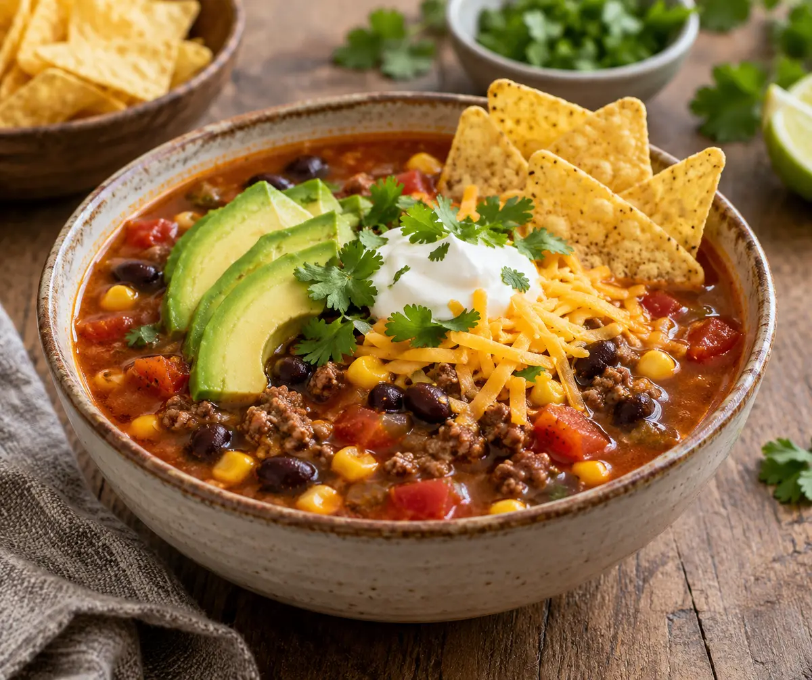
Soup
Taco Soup
A fast one-pot taco soup loaded with seasoned ground beef, beans, corn, tomatoes, and familiar Tex-Mex toppings.

Soup
French Onion Soup
Deeply caramelized onion soup with savory beef broth, toasted baguette, and a bubbling Gruyère cheese cap.
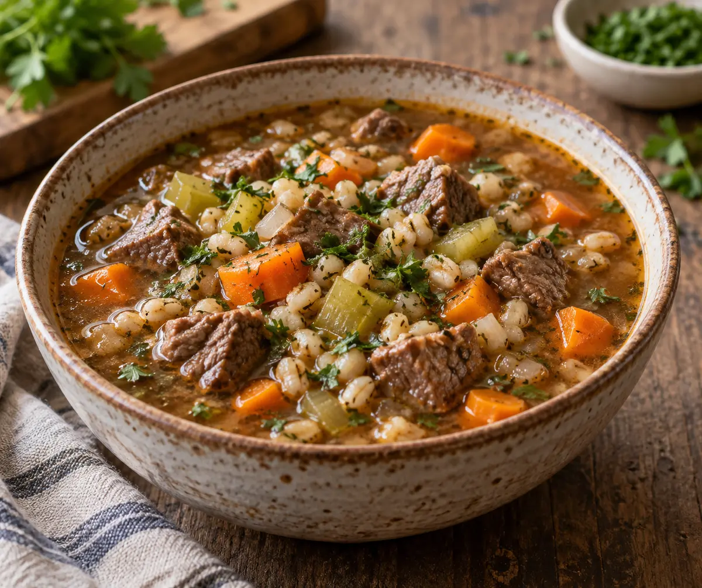
Soup
Beef Barley Soup
Hearty beef barley soup with browned chuck, tender vegetables, and chewy pearl barley in a rich savory broth.

Soup
Split Pea Soup
Classic split pea soup simmered with smoky ham, tender vegetables, and herbs until naturally thick and comforting.

Dessert
Apple Pie
Classic American apple pie with tender cinnamon apples baked inside a flaky double crust.

Dessert
Pumpkin Pie
Silky pumpkin custard pie baked in a flaky crust with warm fall spices.

Dessert
Pecan Pie
Classic pecan pie with a flaky crust, toasted pecans, and a glossy caramel-like filling.

Dessert
Key Lime Pie
Tangy Key lime pie with a graham cracker crust, creamy citrus filling, and whipped cream.

Dessert
Cheesecake
Creamy baked cheesecake with a buttery graham cracker crust and a smooth vanilla filling.

Dessert
New York Cheesecake
Tall, dense New York cheesecake with browned edges, a creamy center, and a crisp crumb crust.

Dessert
Carrot Cake
Moist spiced carrot cake layered with tangy cream cheese frosting and toasted nuts.

Dessert
Red Velvet Cake
Soft red velvet layer cake with a light cocoa flavor and classic cream cheese frosting.

Dessert
Brownies
Fudgy chocolate brownies with crackly tops, chewy edges, and rich cocoa flavor.

Dessert
Blondies
Chewy brown sugar blondies with buttery vanilla flavor and golden crackly tops.

Dessert
Vanilla Cake
A classic American vanilla layer cake with a soft golden crumb and fluffy vanilla buttercream.

Dessert
Apple Crisp
Tender cinnamon apples baked beneath a generous golden oat streusel until the fruit juices turn thick and bubbling.

Dessert
Peach Cobbler
Juicy cinnamon-scented peaches baked beneath tender golden buttermilk biscuit topping.

Dessert
Blueberry Muffins
Tall bakery-style blueberry muffins with tender vanilla crumb, juicy berries, and crisp sugared tops.

Dessert
Chocolate Chip Muffins
Golden bakery-style vanilla muffins with tall domes and semisweet chocolate chips in every bite.

Dessert
Cinnamon Rolls
Soft, fluffy cinnamon rolls layered with brown sugar filling and finished with tangy cream cheese icing.

Dessert
Banana Pudding
Classic Southern banana pudding layered with vanilla custard, fresh bananas, vanilla wafers, and whipped cream.

Dessert
Chocolate Fudge
Rich, smooth chocolate fudge made with semisweet chocolate, condensed milk, vanilla, and a pinch of salt.

Dessert
Peanut Butter Cookies
Classic peanut butter cookies with crisp edges, tender centers, and the traditional fork crosshatch.
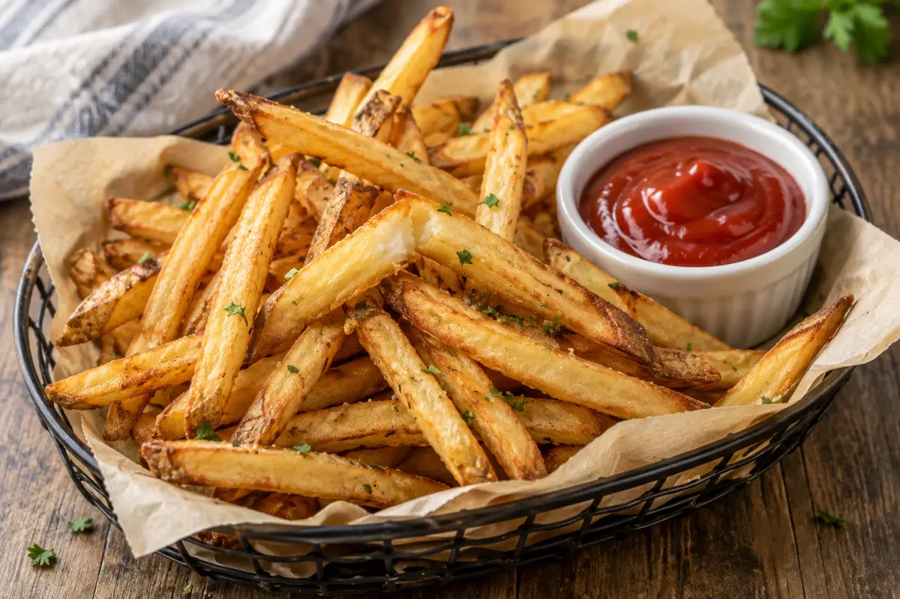
Appetizer
Air Fryer French Fries
Crisp golden air fryer French fries with fluffy centers, light seasoning, and far less oil than deep-fried potatoes.
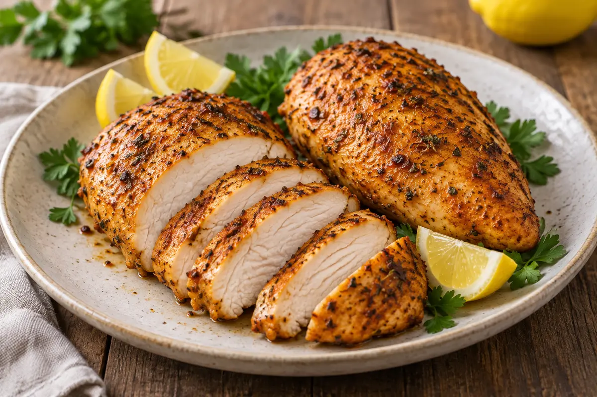
Chicken
Air Fryer Chicken Breast
Juicy air fryer chicken breasts with a savory paprika-herb crust and a dependable quick-cooking method.
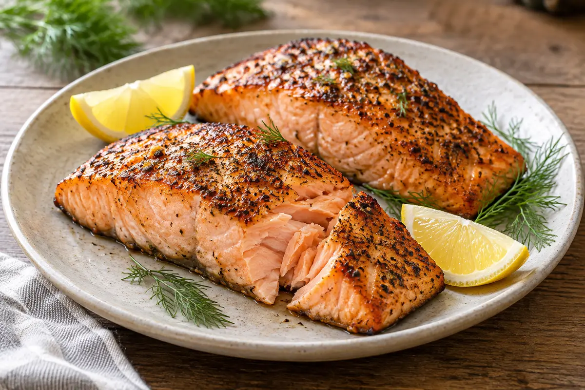
Seafood
Air Fryer Salmon
Tender, flaky air fryer salmon with lemon, garlic, paprika, and crisp seasoned edges in under twenty minutes.
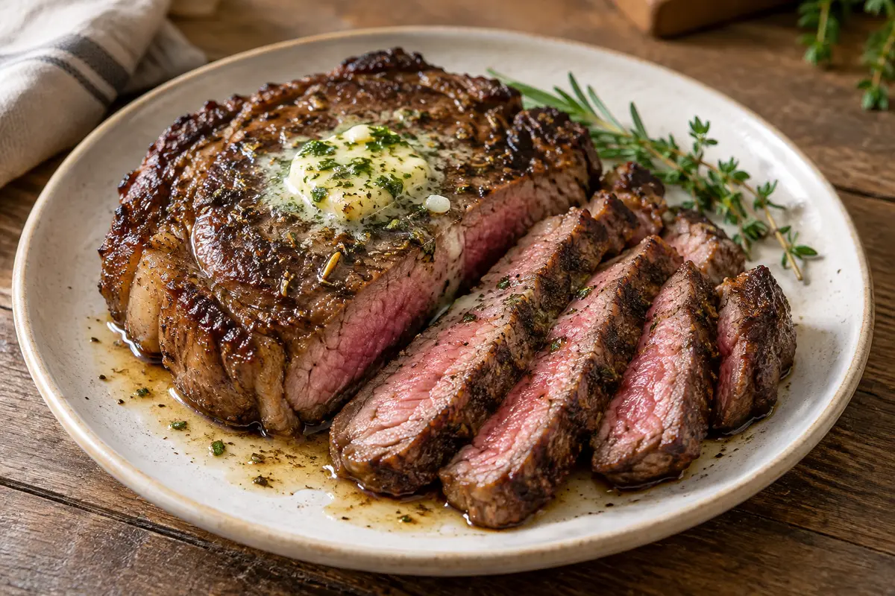
Beef
Air Fryer Steak
Air fryer ribeye steaks with a browned peppery crust, juicy center, and melting garlic-herb butter.
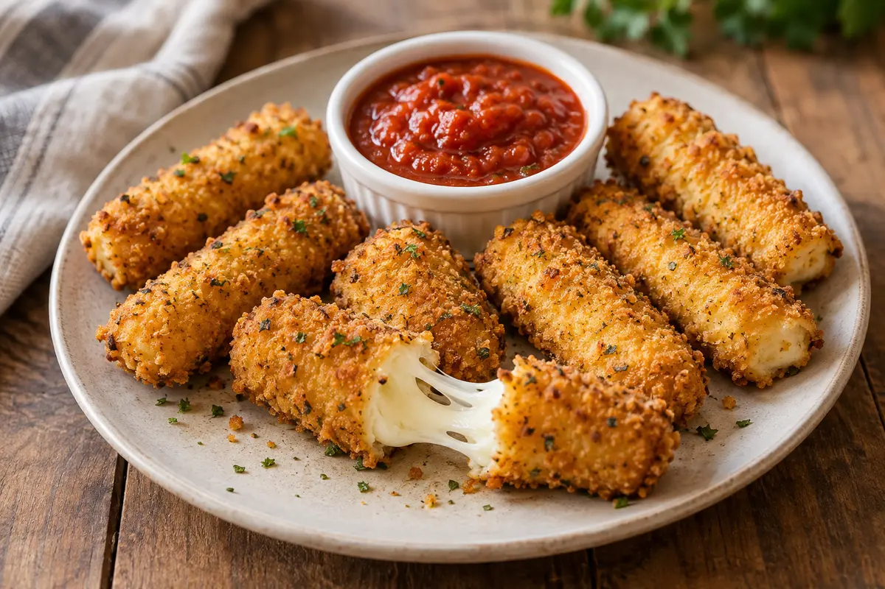
Appetizer
Air Fryer Mozzarella Sticks
Crunchy homemade air fryer mozzarella sticks with stretchy cheese centers and warm marinara for dipping.
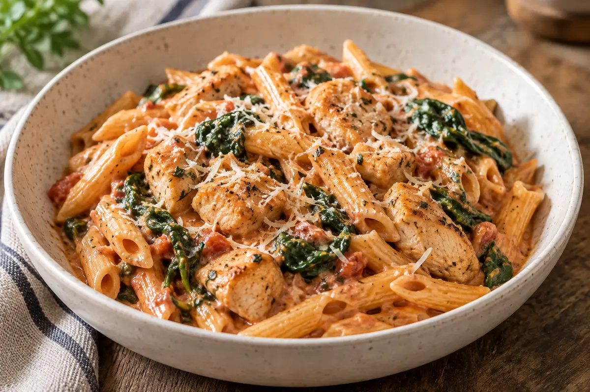
Pasta
One-Pot Chicken Pasta
Creamy tomato one-pot chicken penne with spinach, Parmesan, and a savory weeknight sauce.
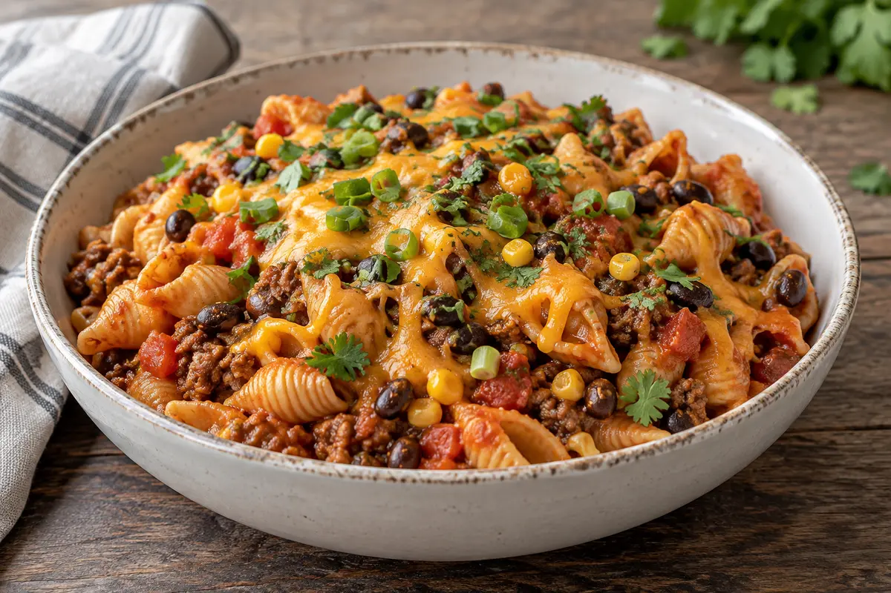
Dinner
One-Pot Taco Pasta
Cheesy one-pot taco pasta loaded with seasoned beef, black beans, corn, tomatoes, and tender shells.
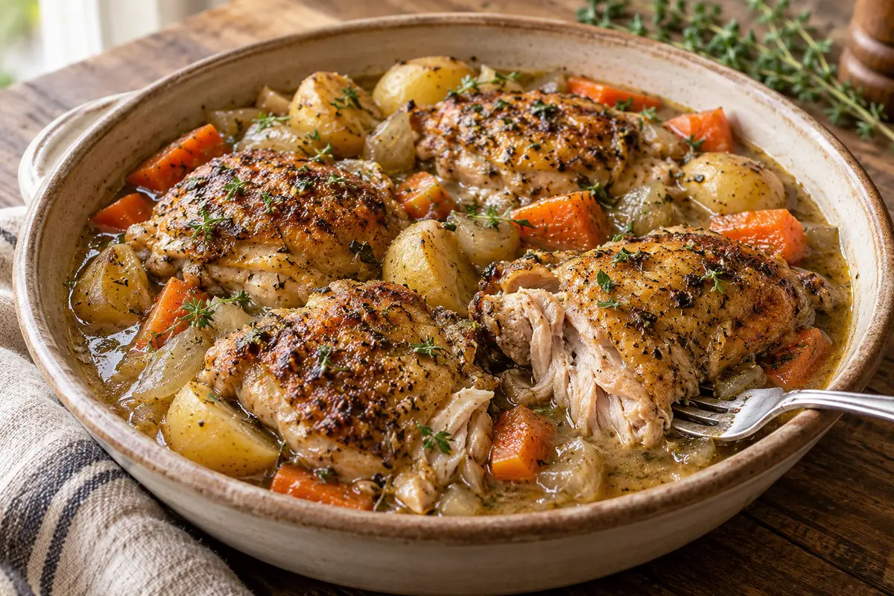
Chicken
Slow Cooker Chicken
Tender slow cooker chicken thighs with potatoes, carrots, onions, herbs, and a rich savory gravy.
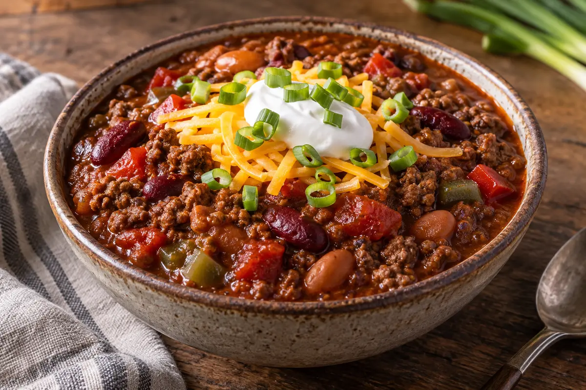
Beef
Slow Cooker Chili
Thick slow cooker beef chili with two kinds of beans, tomatoes, peppers, and deeply layered spices.
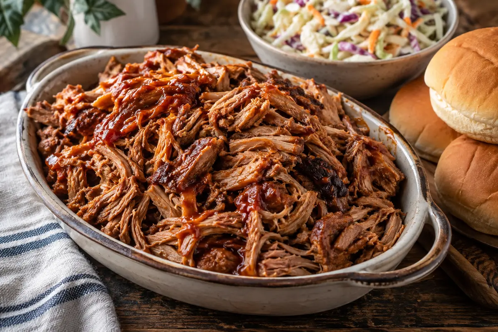
Pork
Slow Cooker Pulled Pork
Fall-apart slow cooker pork shoulder infused with a sweet, smoky barbecue marinade and finished with its savory cooking juices.
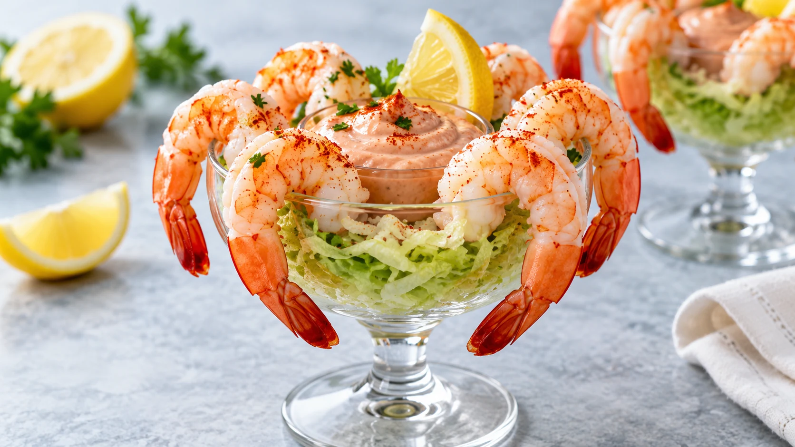
Appetizer
Shrimp Cocktail
Classic American shrimp cocktail with chilled poached shrimp and a tangy homemade cocktail sauce.